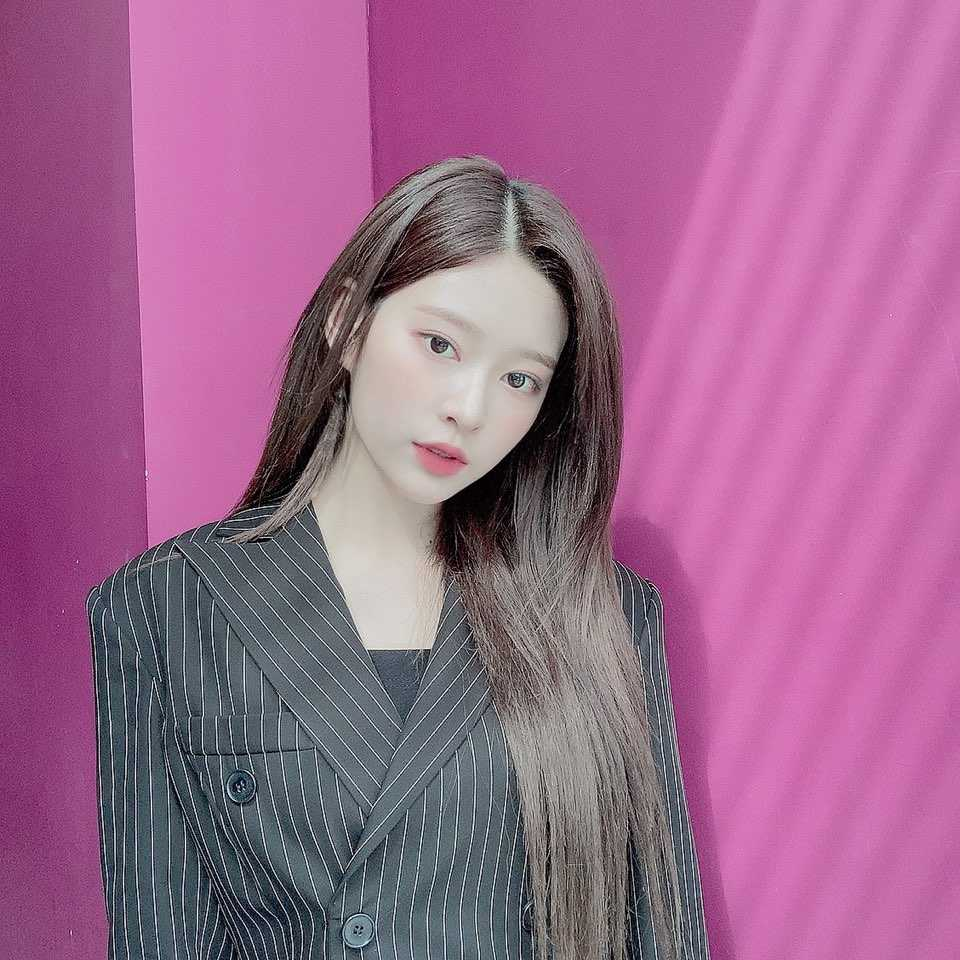

그래서 치즈볼이 어땠냐면요!
정말 한입 먹자마자 안에 치즈가ㅠㅠ
너무너무 행복했어요
그 소스랑 치즈와 기름진 맛의 조화란..
컴백쇼 녹화 끝나고 마지막으로 먹었었는데
그때 그 감동 그대로..
아 오늘 방송 봤어요?!
저 오늘 제스처 바꿔봤는데ㅎㅎ어땠어요?!
사실 제스처 바꾸면 멤버들끼리 많이 봐주거든요!
이게 좋은지, 저게 좋은지, 이렇게 하는 건 어떨지
오늘도 멤버들이 많이 도와줬어요!!
평소에도 우리 멤버들 너무 멋있고 좋지만
이럴 때 또 한 번 느끼는 것 같아요
한두 번 아니지만 이렇게 서로 아껴줄 때마다 정말 감동이랍니다😊
오늘도 파이팅했어요!!
이호는 뭐하고 있어요?
주말 잘 즐기고 있어요?!